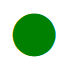

ثبت نام پیش دبستانی
سال تحصیلی 1402-1403
پيش دبستانى و مهد كودک ما با بهرهمندی از امكانات و شيوههای روز دنيا در تهران آماده خدمت رسانى به فرزندان ایران زمين است.
مهد کودک ما
ثبت نام پیش دبستانی
سال تحصیلی 1402-1403
پيش دبستانى و مهد كودک ما با بهرهمندی از امكانات و شيوههای روز دنيا در تهران آماده خدمت رسانى به فرزندان ایران زمين است.
برای پیشرفت دلبند شما
چه برنامه هایی را داریم
آموزش زبان انگلیسی
کودکان می توانند زبان دوم را در مهد كودک ما با شيوه های صحيص به راحتی زبان مادری یاد بگیرند.
بازی و سرگرمی
هر چە امکان پرداختن به بازیهای سالم و سازنده بيشتر باشد، فكر وذهن وجسم بهتر پرورش می یابد.
آموزش واستعداد يابى
كودك زير ٧ سال را نبايد به طور مستقيم آموزش داد وبايد از روش هاى تخصصى كمك بكيريم.
كلاس شطرنج
آموزش شطرنج باعث افزايش تمركز و دقت در کودکان میشود. کودک یاد میگیرد هرکاری را اول ارزیابی کند.

برای مدیریت عالی
اصول کاری مهد کودک چیست؟
آموزش یک پایه اساسى براى پيشرفت وتوسعه هر فرد وجامعه است. اهميت امر آموزش نه تنها به افزايش دانش و مهارتها محدود نمیشود، بلكه تأثیرات گستردەتری بر جوانب مختلف زندگی دارد. امر آموزش ابزارى برای تجربهی جهان، تفکر انتقادی، توسعهی شخصیت و ایجاد تغییر در جامعه فراهم میکند.
آموزش و استعداد یابی
پرورش خلاقیت
تغذیه و بهداشت
بازی و سرگرمی


آخرین نوشته ها
مطالب خواندنی وبلاگ

احساس خجالت در کودکان
خجالت در كودكان، احساسى است كه با واكنش هاى فيزيكى مانند چهره ی قرمز و خم شدن سر، همراه می شود. اين احساس ممكن است به دلیل ترس از تحلیل دیگران یا نگرانی از عملکرد در ...
ادامه مطلب >
رفتار جلب توجه در کودکان
جلب توجه در كودكان ممكن است با كمک رفتارهای هيجانى مانند عصبانیت يا برخوردهای نامتعارف انجام شود. همچنين، استفاده از موقعيت هاى خاص، خندههاى پراكنده و تمثيل هاى جالب نيز ...
ادامه مطلب >
خواص پرتقال و لیمو برای کودکان
پرتقال وليمو، علاوه بر ويتامين C، فيبر غذايى دارند كه هضم بهتر و تنظيم قند خون را تسهيل مىكند. همچنين، آنتى اكسيدان هاى موجود در آنها به سلامت قلب وپايين آوردن التهابها كمك ...
ادامه مطلب >
درباره مهد ما
مهد كودك ما يك محيط آموزشى پويا ومهربان براى كودكان فراهم مى كند. ما با تيمى متخصص ومهربان به ارتقاء توانايى هاى اجتماعى، انكيزشى وتحصيلى كودكان مى پردازيم. هچنين بازى هاى آموزشى، هنر وتفريحات سازنده را به كودكان ارائه مى دهيم.
گالری تصاویر
تماس با ما
@Kindergarten
٠٩١٢٨٨٨٨٨٨٨ - ٠٢١٢٢٥٥٥٥٥٥
تهران، دروس، خيابان رشت، كوچه گل بو، پلاک 16